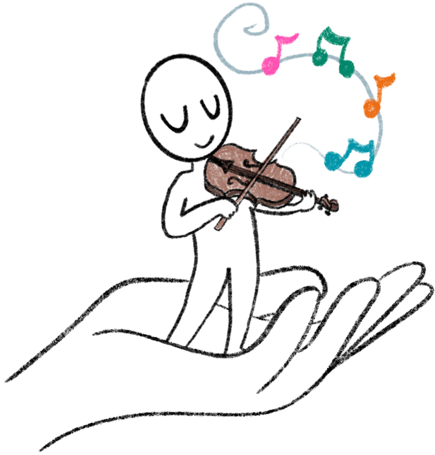

HAPPY

HeAlthy Playing Practices for Young musicians
HAPPY è un progetto della Scuola universitaria professionale della Svizzera italiana (SUPSI), che riunisce insegnanti di musica, famiglie e professionisti della salute per promuovere la salute dei giovani musicisti. Il progetto è finanziato dal programma Agora del Fondo nazionale svizzero (FNS) e trasforma la ricerca sulla salute dei musicisti in strumenti pratici e accessibili, per costruire fin dall'infanzia abitudini di pratica sane e consapevoli.
Vuoi partecipare?
Insegni musica? Tuo figlio o tua figlia suona uno strumento? Ti occupi della salute di bambini o adolescenti? Scopri il progetto e come puoi collaborare con noi.
Contributo
Il progetto HAPPY è finanziato dal Fondo nazionale svizzero per la ricerca scientifica (FNS).